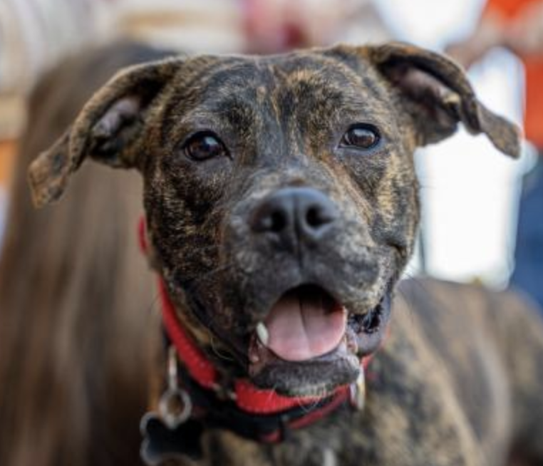
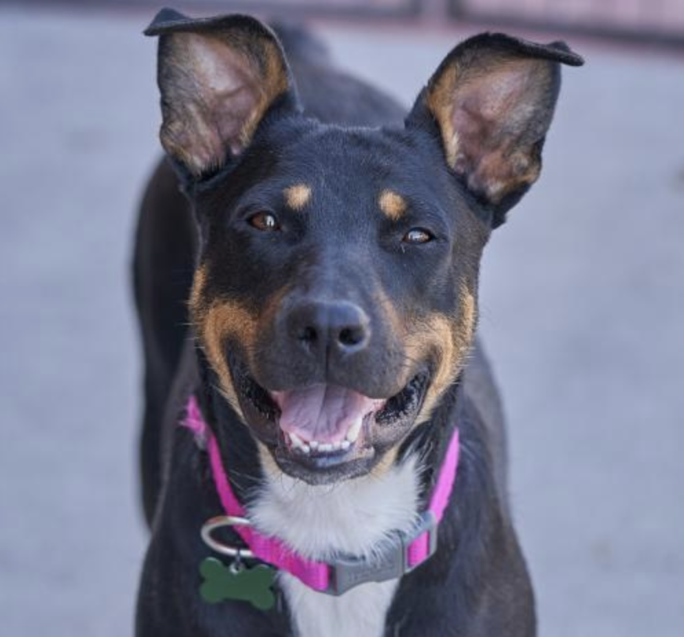
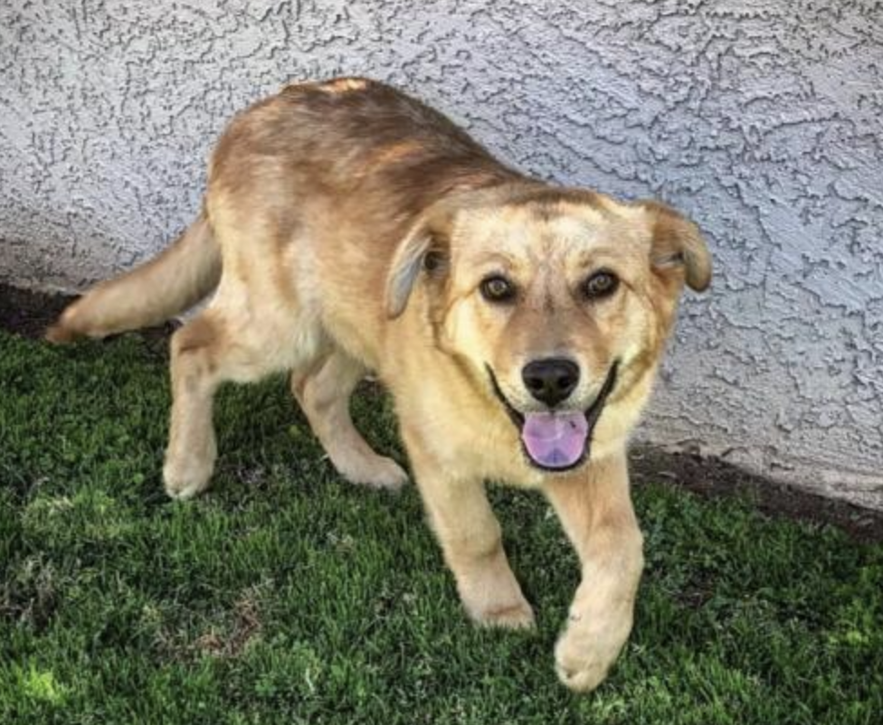

Bellini
About
Bellini is a fun and spunky young girl. Her breed is largely a mystery, though the area she came from and her looks imply she's probably part border collie. Bellini is a girl who loves to play with her doggie foster siblings, and we'd love to find a forever home with a doggie brother. She'd also love to go to an active home or a home with children to play with. She enjoys chewing on her antlers and nylabones, chasing balls and squeakie toys, and cuddling with her humans. As with all young puppies, she'll require lots of continued training and socialization to ensure she grows into a happy and well balanced adult dog.
- Status: Available for Adoption
- Adoption Fee: $300
- Rescue ID: D200016
- Color: Black with tan, yellow
- Current Age: 2 Years
- Microchipped: Yes
- Breed: Border Collie, mixed
- Weight: 15 Pounds
- Housetrained: Yes
Bubba
Bubba comes with a sad story. He lived his entire life outside, his only cover from sun or rain was a flimsy wooden plank. His ears are scarred and mangled from fly bites, his eyes were both infected when he came to us, and his spirit was clearly broken. When we pulled him from the carrier he was in, he urinated and defacted in fear, and then simply collapsed on a towel on the ground, unwilling to move. We knew Bubba has scars, both emotional and physical, and we knew we wanted to help him recover from both.
Bubba is now is a loving Paw Placement foster home, and he's blossoming before our eyes. As soon as he had a bath - possibly his first ever - we could tell he felt better. He rubbed himself on a towel, flipped on his back and rolled on the carpet, and got the "so fresh and so clean" zoomies! His foster mom, with her patient and gentle nature, quickly gained his trust, and he began to seek affection. Next was teaching him to walk on a leash, then house training and potty training, socializing him with people and exposing him to a whole new world.
- Status: Available for Adoption
- Adoption Fee: $200
- Rescue ID: D200014
- Color: Lemon with white
- Current Age: 3 Years
- Microchipped: Yes
- Breed: Chihuahua, mixed
- Weight: 12 Pounds
- Housetrained: Yes
Calhoun
Calhoun and two other puppies were found in the desert, over 10 miles from the nearest home. Due to the remote location and coyote activity in the area, it is believed they were found quickly by some kind folks ATVing in the desert. After a search for owners, these babies were brought to Paw Placement.
Calhoun was welcomed into a loving foster home that is experienced with hunting breeds, specifically hounds. Foster momma tells us Cal is all hound - high energy, intelligent and vocal. Cal is extremely loving and affectionate with his people, friendly and outgoing with new people, and social and playful with dogs. Cal is looking for a forever home that is experienced with hunting or working breeds. He would also very much prefer to be placed in a home with a doggie playmate. Calhoun will not be placed in an apartment or condo - this boy needs a yard. Cal is working on his crate and house training in his foster home and, not surprisingly, picking up very quickly. As with all young pups, he'll require lots of continued training in his forever home including crate, house and potty training, and socialization.
- Status: Available for Adoption
- Adoption Fee: $425
- Rescue ID: D190078
- Color: Red, Gold, Orange, Chestnut and White
- Current Age: 6 months
- Microchipped: Yes
- Breed: Hound, mixed
- Weight: 10 pounds
- Housetrained: TBA
Bosco
Bosco is a sweet young pittie mix who weighs about 30 pounds. This petite boy has brought nothing but joy to his foster home since the day he arrived. Bosco is affectionate and cuddly, friendly and easygoing, playful and goofy. He currently lives with dogs of all sizes, and he prefers the ones who will play with him. Bosco enjoys chewing on antlers and nylabones, playing with squeaky toys, and romping with his doggie friends. Bosco is crate and dog door trained in his foster home. Bosco would love to find a forever home with a doggie playmate, and he needs a house with a yard. If you are interested in adopting, please complete an adoption application. Bosco will be ready for adoption after the new year.
- Status: Available for Adoption
- Adoption Fee: $275
- Rescue ID: D190097
- Color: Brindle
- Current Age: 9 months
- Microchipped: Yes
- Breed: Pitbull Terrier mixed
- Weight: 30 pounds
- Housetrained: Yes
Maci
Maci was surrendered to rescue by her owners on a reservation when they realized she deserved a better life. Maci was 9 months old and pregnant at the time. She was welcomed into a loving Paw Placement foster home, had her babies - who have all been adopted to wonderful homes - took some time to recover, and is now ready to find her very own forever family.
Maci is energtic and playful, and would very much like to find a forever home with a doggie playmate. She loves to romp and play with her doggie friends - in fact, if you stop by our adoption event, you'll likely find her romping her playing with her buddies there! Maci is crate and dog door trained in her foster home. She loves to chew on antlers and nylabones, and she's a smart girl who learns quickly! Maci is friendly with all people, children included, and loves to walk and explore the world with her people. Though Maci enjoys her cuddles with her humans once her energy is drained, we would not describe her as a couch potato, so she needs an active home that will work to drain her energy daily (her many doggie playmates accomplish this in her current foster home).
- Status: Available for Adoption
- Adoption Fee: $250
- Rescue ID: D200017
- Color: Black with tan, yellow or fawn
- Current Age: 1 Year
- Microchipped: Yes
- Breed: Border Collie
- Weight: 50 pounds
- Housetrained: Yes
Ritz
Ritz came to us via some wonderful rescuers up north and, though not much is known about the early months of his life, Ritz doesn't seem to carry any scars, emotional or physical, from that time. Ritz is sweet and affectionate, playful and energetic, friendly and easy going. Though we have no idea of his breed, based on his temperament and gorgeous coat, we believe he must have golden retriever in his genes. Ritz is an awesome boy who would love to go home with a doggie playmate or two. He is eager to please and smart - with the right training, he could make a wonderful therapy dog!
- Status: Available for Adoption
- Adoption Fee: $350
- Rescue ID: D200015
- Color: Golden, chestnut
- Current Age: 5 months
- Microchipped: Yes
- Weight: 50 pounds
- Breed: Golden Retriever
- Housetrained: Yes